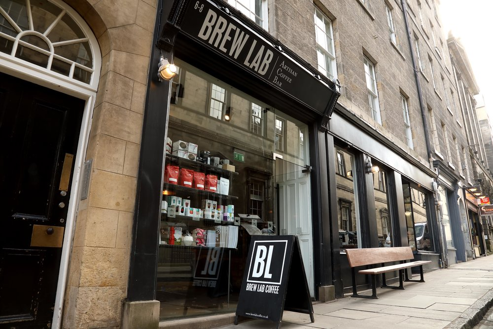
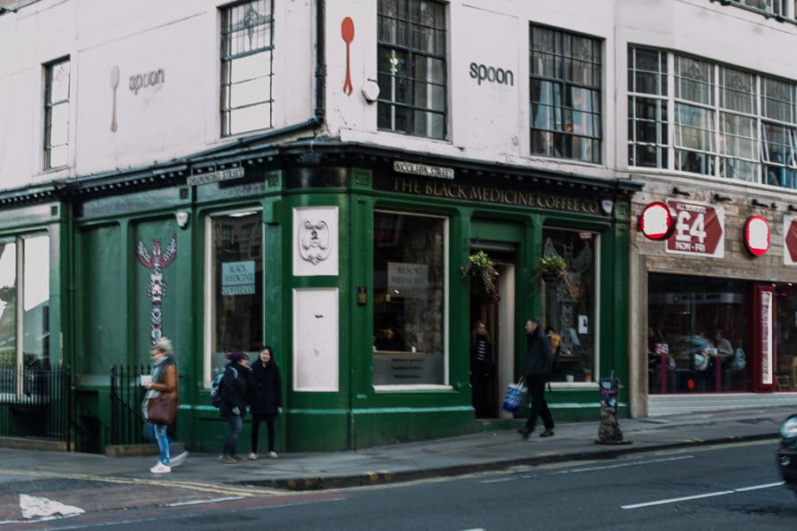
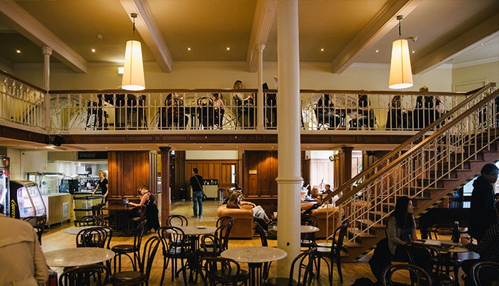
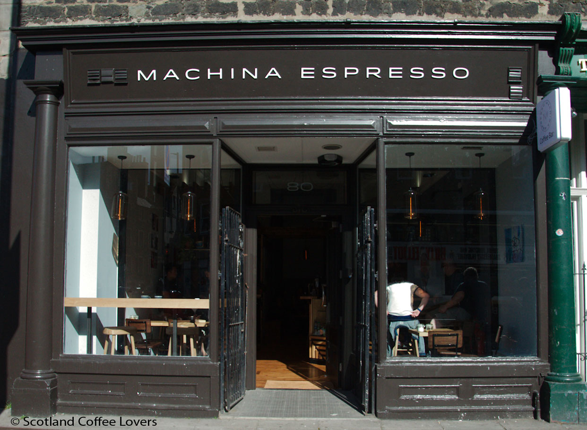

One of the coolest places to gather with your friends, grab a coffee and enjoy the healthy snacks.

Take your laptop and all your liabilities to Black Medicine, grab a coffee and sit infront of the window OR be there with your friends and enjoy the different taste of coffees..

Close to University of Edinburgh George Square campuss, best coffees, and always competing prices

If you want to get rid off the daily stress and spend some time on cosy place, Machinaespresso is delivering all...